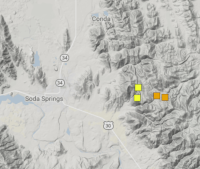

Recent Earthquakes in the Soda Springs area
From The Idaho State Journal: A Utah seismologist believes a rash of recent earthquakes near this city — including a magnitude 3.8 tremor detected early Thursday — are lingering aftershocks of a more powerful earthquake from late last summer. On Sept. 2, 2017, people throughout Southeast Idaho felt the region’s largest earthquake in several years, which was magnitude 5.3. No significant damage was reported as a result. “That earthquake was followed by thousands of aftershocks. It was a very energetic aftershock sequence, and in general, they migrated south to southeast, getting closer to Georgetown,” said Jim Pechmann, a University of Utah seismologist.
Hundreds of earthquakes were reported in September 2017 alone. Pechmann said the aftershocks never completely ceased, though they slowed in number and scope. During the past few days, however, Pechmann said the apparent aftershocks have regained steam. The U.S. Geological Survey has reported eight earthquakes, ranging in strength from magnitude 1.4 to 3.8, from Monday through Thursday, all reported within 7 miles east of Soda Springs.
“They’re close to being vertical,” Pechmann said.Pechmann explained quakes are typically triggered by sudden “slips” of plates past each other, resulting in seismic waves. The scientific paper he helped to author speculates the aftershocks have continued because the original slip was much slower than normal, and may be triggering additional slips of adjacent faults. “This area seems to be prone to repeated activity,” Pechmann said, noting there was a 4.7 magnitude earthquake in the same area in the summer of 1960, and another significant earthquake there in 1982.Pechmann said the regional landscape has generally been shaped by the crust “extending and stretching out.” That has resulted in “internal deformation and breaking up of the plates along these normal faults, forming the Basin and Range topography of Western Utah, Southeast Idaho and most of Nevada.”